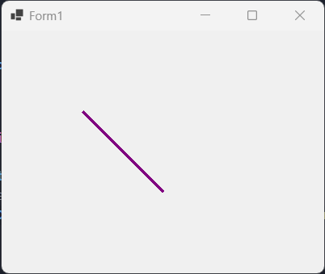
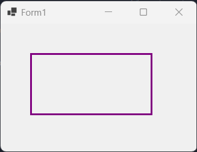

What is Statistics and its relationship with other disciplines. Difference between Descriptive and Inferential Statistics.
Statistics is a branch of mathematics that deals with the collection, analysis, interpretation, and presentation of data. Statistics can be used to describe, summarize, compare, and make predictions based on data. Statistics can also help us test hypotheses and draw conclusions about various phenomena in the natural and social sciences.
Statistics has many applications and interactions with other disciplines, such as economics, business, planning, state administration, physical and natural sciences, social sciences, and more. Statistics can help us understand the patterns, trends, relationships, and effects of various factors in these fields. For example, statistics can help us measure the economic growth of a country, the effectiveness of a new drug, the impact of climate change, the preferences of consumers, the quality of education, and so on.
There are two main types of statistics: descriptive and inferential. Descriptive statistics use summary statistics, graphs, and tables to describe a data set. Descriptive statistics are useful because they allow us to understand a group of data much more quickly and easily compared to just looking at raw data values. For example, descriptive statistics can tell us the average, median, range, standard deviation, frequency distribution, and shape of a data set.
Inferential statistics use data from a sample to make predictions or generalizations about a larger population. Inferential statistics are useful because they allow us to draw conclusions and make decisions based on data that may not be available or feasible to collect for the entire population. For example, inferential statistics can help us estimate the proportion of voters who support a candidate, the mean difference between two groups in an experiment, the correlation between two variables in a survey, and so on.
References:
EconomicsDiscussion, Relation of Statistics with other Sciences
Statology, Descriptive vs. Inferential Statistics: What’s the Difference?
Describe the concepts of Population, Sample Attribute, Variable, Level of measurement and Dataset.
Population: A population is the entire group that you want to draw conclusions about. For example, if you want to study the opinions of Italian voters, the population is all the eligible voters in Italy.
Sample: A sample is the specific group that you will collect data from. The size of the sample is always less than the total size of the population. For example, if you want to study the opinions of Italian voters, you might survey a sample of 1000 voters randomly selected from the population.
Attribute: An attribute is a characteristic or feature of a member of a population or a sample. For example, gender, age, height, weight, income, and political preference are attributes of people.
Variable: A variable is a way of measuring or recording an attribute. A variable can take on different values for different members of a population or a sample. For example, gender is an attribute that can be measured by a variable that takes on two values: male or female.
Level of measurement: The level of measurement is the type of scale that a variable uses to record data. There are four levels of measurement: nominal, ordinal, interval, and ratio. The level of measurement determines what kind of statistical analysis can be performed on the data.
1. Nominal: The data can only be categorized by labels. There is no order or ranking between the categories. For example, zip code, car brand, and marital status are nominal variables.
2. Ordinal: The data can be categorized and ranked by order. However, there is no information about the intervals or distances between the categories. For example, language ability, Likert-type questions, and Olympic medals are ordinal variables.
3. Interval: The data can be categorized, ranked, and measured by equal intervals. However, there is no true zero point that indicates the absence of the attribute. For example, temperature in Celsius or Fahrenheit, test scores, and personality inventories are interval variables.
4. Ratio: The data can be categorized, ranked, measured by equal intervals, and have a true zero point. For example, height, weight, income, and age are ratio variables.
Dataset: A dataset is a collection of data values that have been recorded for a population or a sample. A dataset can be organized in various ways, such as tables, graphs, matrices, or files. A dataset usually consists of multiple variables and multiple observations (or cases). For example, a dataset of Italian voters might have variables such as gender, age, income, and political preference for each voter in the sample.
References:
Population vs. Sample | Definitions, Differences & Examples - Scribbr.
Levels of Measurement | Nominal, Ordinal, Interval and Ratio - Scribbr.
POPULATIONS, VARIABLES, and DATA - University of Houston
Briefly describe the main sampling methods
1. Probability Sampling: This involves random selection, allowing you to make strong statistical inferences about the whole group. It includes:
1.1 Simple Random Sample: Every member of a population has an equal chance of being selected.
1.2 Stratified Random Sample: The population is split into groups, and some members from each group are randomly selected.
1.3 Cluster Random Sample: The population is split into clusters, and some of the clusters are randomly selected. All members from those clusters are included in the sample.
1.4 Systematic Random Sample: Every member of a population is put into some order. A random starting point is chosen, and every nth member is selected to be in the sample.
2. Non-Probability Sampling: This involves non-random selection based on convenience or other criteria. It's easier to collect data but may lead to biases.
Remember, the choice of sampling method depends on the nature of your research and the resources available.
References:
Sampling Methods | Types, Techniques & Examples - Scribbr.
Sampling Methods (With Examples) - Statology.
Sampling Methods: Types, Tips & Techniques - Qualtrics.
Briefly describe the main experiment designs
1. Full Factorial Design: This design tests all possible combinations of the factors. It provides a comprehensive view but can be time-consuming and resource-intensive.
2. Response Surface Design: This design is used when you want to model a response variable by testing the effects of multiple factors and their interactions.
3. Randomized Design: This design randomly assigns subjects to different groups to minimize bias and ensure that the groups are comparable.
4. Block Design: This design groups subjects that are similar in some way to reduce the impact of confounding variables.
5. Matched Pairs Design: This design pairs subjects based on a specific characteristic, then assigns one subject from each pair to each treatment group.
6. Repeated Measures Design: This design measures the same subjects at different times or under different conditions.
Remember, the choice of experimental design depends on your research question, the nature of your variables, and your resources.
References:
Design of experiments - Wikipedia.
Guide to Experimental Design | Overview, 5 steps & Examples - Scribbr.
Experimental Design (Design of Experiments) - Definition & Types - BYJU'S.
Write a program in C# or VB.NET that creates a window containing a single line, point, circle, rectangle
1. Single Line in C#
// Draw a Line in C#
using System;
using System.Drawing;
using System.Windows.Forms;
namespace hw1
{
public partial class Form1 : Form
{
public Form1()
{
InitializeComponent();
}
protected override void OnPaint(PaintEventArgs e)
{
base.OnPaint(e);
Graphics g = e.Graphics;
Pen pen = new Pen(Color.Purple);
g.DrawLine(pen, 50, 50, 300, 300);
}
}
}
The Output is the following:
2. Point in C#
// Draw a Point in C#
using System;
using System.Drawing;
using System.Windows.Forms;
namespace hw1
{
public partial class Form1 : Form
{
public Form1()
{
InitializeComponent();
}
protected override void OnPaint(PaintEventArgs e)
{
base.OnPaint(e);
// Create a new Pen object with a black color and a width of 1 pixel
Pen pen = new Pen(Color.Black, 1);
// Draw a point at (10, 10)
e.Graphics.DrawRectangle(pen, 10, 10, 1, 1);
}
}
}
The Output is the following:
3. Circle in C#
// Draw a Circle in C#
using System;
using System.Drawing;
using System.Windows.Forms;
namespace hw1
{
public partial class Form1 : Form
{
public Form1()
{
InitializeComponent();
}
protected override void OnPaint(PaintEventArgs e)
{
base.OnPaint(e);
Graphics g = e.Graphics;
Pen pen = new Pen(Color.Black, 3);
Brush brush = new SolidBrush(Color.Purple);
g.DrawEllipse(pen, 50, 50, 100, 100);
g.FillEllipse(brush, 50, 50, 100, 100);
}
}
}
The Output is the following:
4. Rectangle in C#
// Draw a Rectangle in C#
using System;
using System.Drawing;
using System.Windows.Forms;
namespace hw1
{
public partial class Form1 : Form
{
public Form1()
{
InitializeComponent();
}
protected override void OnPaint(PaintEventArgs e)
{
base.OnPaint(e);
// Create a new Pen object with a blue color and a width of 3 pixels
Pen pen = new Pen(Color.Purple, 3);
// Create a new Rectangle object with a location of (50, 50) and a size of (100, 100)
Rectangle rect = new Rectangle(50, 50, 200, 100);
// Draw the rectangle using the Pen object and the Rectangle object
e.Graphics.DrawRectangle(pen, rect);
}
}
}
The Output is the following:
Write a program in JavaScript or TypeScript that creates a window containing a single line, point, circle, rectangle.
The Output is the following: